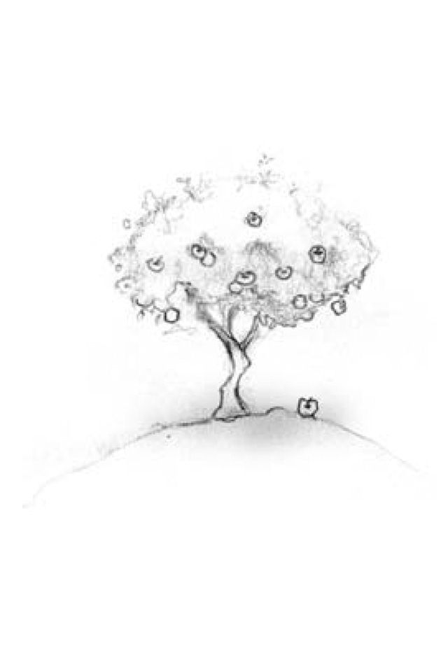
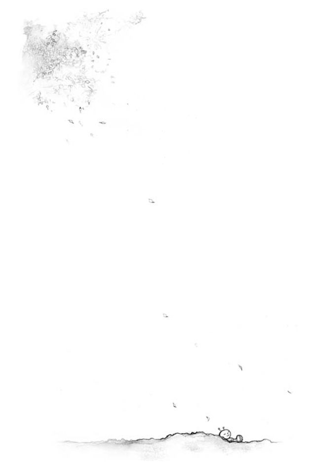

🏠
日
月
縦書き／横書き


| あなた、本当はすごいんです！ | |
| 宝彩 有菜 | |
宝彩有菜 心 心理 明日 メッセージ 心配 イライラ ストレス 解消 クヨクヨ 不器用 傷つく ラク
あなた、本当はすごいんです！
明日が待ちどおしくなる65
のメッセージ
宝彩有菜
はじめに
あれをしてはいけない、これをしてはいけない。
子どもは、教えられたことを守って成長していきます。
やがて、ああすべきだ、こうすべきだ、ということも覚えて、
大人になっていきます。
頑張ることも、涙を我慢することも、身を守ることもできるようになってきます。
「青虫」から固い殻をまとった「さなぎ」になるようなものです。
たしかにそれも成長です。しかし、いつまでも固まっていると変容できません。
「固い殻を破るなんて、勇気が出ない」
「空を飛べるなんて、信じられない」
「もし、花に拒否されたら、そう思うと怖い」
さなぎになるのも一つの成長ですが、その先の蝶になるのが本当の成長です。
さなぎになるのは、そのための準備期間です。
そこで、止まってしまって、さなぎが自分だと思うと、いけません。
忘れてしまっていては、蝶になれません。
本当は、空を飛べるんです。
あなたが、本当の自分に気づいて、少し勇気を出すだけで、
あなたの明日は、輝く青空のもとに果てしなく広がっているのです。
そして、幾千の美しい花々があなたを待っているのです。
この本は、あなたに、
「自分は、本当は空を飛べるんだ」
ということを思い出していただきたいと思って書きました。
さなぎの固い殻を破るのは、内側からです。
「自分は、本当はもっとすごいんだ！」
と気づいた人から順に、大空に羽ばたけます。
宝彩有菜
あなた、本当はすごいんです！ 目次
装幀・画 石村紗貴子
Message1
自分に自信がない......
「自分の力」を引き出すために
『これができなきゃダメだ』ではなく
『できたら素晴らしい』と思う。
自分を「弱い」と責めないで
「恋人に捨てられた。もう、生きていけない」と思うのも、
「お母さんの言うことに頭があがらない」と思うのも、同じ間違いがあります。
間違いはすべて、自分が弱いと思っている点です。
人間は本来とても強いのですが、
幼いうちは、誰かに面倒をみてもらわなければ生きていけません。
ですから、自分をとても弱いと思います。
「愛されなければ生けていけない」になるわけです。
たしかに、赤ちゃんから幼児期にかけては、それが正しい認識です。
また、この認識は「頭」が働き始めたころから
ずっと繰り返し確認してきたことですから、そう簡単には変えられません。
それで、大人になっても、誰か大切な人に会うと、
すぐに「愛する人に嫌われてはいけない」とか、
私は私のままで大丈夫です。
何かになろうとしたり、
誰かになろうとしてはいけません。
私のままでいいのです。
「愛する人が去って行くと自分は死ぬ」などの考えが走ってしまいます。
赤ちゃんのときと同じ「自分は弱い」のパターンでものを考えているわけです。
間違っています。
恋人に捨てられても、悲しいことは悲しいでしょうが、命を失うことはありませんね。
また、大人になれば、親の言うことを全部おとなしく聞く必要もありません。
赤ちゃんのままではいけません。成長しましょう。
「自分は弱い」ではなく、「自分はかって弱かった。でも今は強い」が正解です。
そう自覚しましょう。その自覚はこう思えば持てます。
「自分はかって、愛されないと生きていけなかった。
でも、今は、成長したから人を愛する力を持っている」と。
つまり、自分には、「人を愛する力」があるのだと確認すれば、
大人になれるというわけです。
また、その力を使ってみると、
実際、自分は強い大人であることを、すぐに実感できますよ。
人からよく思われようとすると
人の言いなりになります。
奴隷になるようなものです。
「認められたい」気持ちは、行き過ぎないこと
誉められたり、好かれたり、つまり、人から認められると、嬉しくなりますね。
逆に、貶
されたり、嫌われたり、つまり、人から認められないと悲しくなります。
なるべくなら、認められるように行動しようと思います。
でも、「認められたい」が行き過ぎると、自分が苦しくなりますから、
行き過ぎないようにしましょう。
と、言うのは簡単ですが、
では、どこまではOKで、どこからが行き過ぎなのでしょうか？
たとえば、恋人に好かれようと努力し始めたとすると、
自分の至らぬ点、改善したい点を、
恋愛中はパワーがありますから、必死で矯正します。
成長が一気に進みます。恋愛は人間を磨く最強の道場です。
しかし、もっともっと好かれようとして、
人の評価を当てにしなくても
幸福になるワザがあります。
たとえば、彼の好みの女の子に変身しようとすると、
この辺りから行き過ぎで、苦しくなってきますね。
その理由は、「どのように」が、明確でなくなってくるからです。
好みなどと言うのは、それほど明確ではありません。
その不明確な着地点に向かって飛び降りても失敗します。
世間から認められたいのも、恋人に認められたいのも同じですが、
相手の好みを自分勝手に推察してそれに近づいても、当たりもあればハズレもあります。
また、世間や恋人は、こう思っているハズだと考えるのも一種の傲慢です。
それより、自分を信じて、自分自身を深く大きく表現しましょう。
その方が、右往左往しないだけ効率的で、しかも、とても楽しいのです。
また、それは必ず認められます。今日でなければ、明日必ず。
個性の発揮は、
神様が賞賛するところだからです。
「苦労して欲しいもの」は
「苦労」が欲しいだけ。
何でも「早くできる」のは良いことか？
いつまでぐずぐずしてるのよ、早く片付けなさい。
早く宿題をしなさい。
早くお風呂に入りなさい。
早く寝なさい。
なんでも早く早くと追い立てられながら、子どもは大きくなっていきます。
そして、それなりに早くできるようになってきますから、
叱られることは少なくなってきます。
が、「頭」は、「何でも早く早く」と覚えてしまっていますから、
どんなことでも早くやろうとします。
友達と遊んでいるのですから、
トランプを配るのはゆっくりでもよさそうですが、急いで配ります。
雑誌の組み立て付録を楽しみながらゆっくり作ってもよいのに、
急いで作ってしまいます。
大人になっても、ゆっくり話し合って決めればよいハズの旅行の計画も、
急いでテキパキ決めてしまいます。
すると、仕事や交渉はどんどん早くなるでしょうが、
人と人との触れ合いが乾燥しがちになります。
最近なんだか、上滑りして潤いが無いなぁと感じたら、
ちょっとチェックしてみましょう。
この、なんでも大急ぎでしなくっちゃと思っている頭の言いなりになっていないかと。
そして、こう宣言してみましょう。
「今日一日、しなくっちゃでは、何もしない」
もし、頭の中に、「早くしなくっちゃ」と聞こえたら、
「本当に？」と疑ってみましょう。
早くすることで、何か大切な温かいものを失っていないか？
もし分からなかったら、実際にゆっくりやりながら、確かめてみましょう。
心の触れ合いは、すぐに戻ってきます。
すると、微笑み合うことも多くなります。
人生は、5
分、10
分を急がなければならないほど、短くはありませんよ。
自分が誰なのか忘れたら、
楽しい自分を探せ。
自分の「立ち直れる力」に気づこう
めげてもすぐに立ち直れる。
その自信があれば、どんなことも怖くありません。
自分を立て直すパワーが、自分の中にあるのだという自信。
その自信を持ちましょう。
さて、その持ち方とは。
「人間は生物界の王様である！」
落ち込んでどうしようもないと思っていても、案外人間は強いものです。
意識だけが、立ち直れないと深刻に思っていますが、
他のところは、そんなに深刻に考えてはいません。
苦しいことばかり追いかけてる自分は、
「本当の自分」ではありません。
人生は、楽しく生きてもいいのです。
ですから、お腹も空きますし、眠くもなります。
よくよく調べてみると、「頭」だけが深刻に考えているわけです。
そもそも「頭」は、肉体が飢えないで健康に生きていくための
「思考」をするのが使命です。
ですから、その根本的な使命を果たしてもらえばよいわけです。
とりあえず食事をとって、風呂に入って、寝る。
それだけをよく考えて真剣に実行します。
すると、人間誰でも肉体は、生物界の王様ですから、
すぐに元気が回復してきます。
身体が元気になると、内側から生きている喜びが戻ってきます。
すると、「よし、また頑張ろう」と、明日に向かって立ち上がれます。
劣等感も優越感も持っていないところが、
実は、その人の「才能」が隠れているところ。
「才能」は、意外なところに隠れている
人の顔が違うように、もっている能力もそれぞれ個性的です。
自分の才能を早く見つけて伸ばすと、人生はとても楽しくなります。
時代に合えば、世の役にも立ちます。
こうした才能を見つけるために、
ふつうは「人より優れているところはどこか」という探し方をします。
たとえば、小学校のとき「絵が上手だ」や「走るのが速い」などと誉められた場合。
それを覚えていますから、
画才があると思ったり運動能力に長けているなどと思ったりします。
しかし、こういう探し方で自分の才能を探すと、間違うこともあります。
歌がうまいとか、作文がうまいなどと、別のことも評価されていたかもしれません。
あるいは、先生はどの子にも絵が上手だ、足が速いと誉めていたかもしれません。
今、覚えている分野というのは、劣等感を克服したものか、その延長線上にある優越感を満たしたもののいずれかです。
つまり、「努力した」ことを認められた分野です。
実は、本当の才能は「あまり、努力した感じを持っていない分野」にあります。
賞賛されても覚えていない分野。
自分としては当たり前で、とくに努力したわけではなかった。軽くできた。
誉められても嬉しくない。で、覚えていない。
こういう分野に、才能が隠れている可能性が多いのです。
大人になってそれを見つけて、本気で磨き始めたら瞬く間に上達します。
このうえなく面白いと感じます。
「はっ、そういえば、この才能は薄々知っていた」とニコニコ嬉しくなりますよ。
「頑張り屋」をやめたとき、ふと見えた「本当の自分」。
「心配症」をやめたとき、ふと微笑んだ「本当の自分」。
「威張りたがり屋」をやめたとき、ふと触れた「本当の自分」。
「本当の自分」の探し方は、とてもシンプル
成功した人の自伝などに、「これが私の道だと確信しました」とか、
「これが本当の自分だったのです」とかの言明があります。
それを読むと、「本当の自分」を見つけると、
人生で成功できて、充実感を得られるのだと思います。
ひるがえって、自分は「本当の自分」でない自分で生きているから
充実感もないのだと思い、「本当の自分」探しを始めます。
でも、「本当の自分」とは、
まるで、地中深く埋まっている宝石のようなもので、
誰も、地上から、この下にあなたの宝石が埋まっていますよとは言えないのです。
誰から認められなくても、コツコツと坑道を掘り進んだ人が、
あるとき、宝石を見つけて、
「（これは私が見つけたのだから）私の宝石だ」と言えるのです。
そのとき、大きな充実感や至福を感じ、
霧が晴れるように現れた「本当の自分」。
ああ、そうだった。
私は「この人」に会いたかったのだ。

「私は、自分の進んできた道に間違いはなかったと確信した。
私は本当の自分を見つけたのだ」と感激の喚声を上げられるのです。
「でも、間違ったところを掘っていたら、自分の宝石は見つからないじゃないですか。
まず、どこから掘ればいいのか、それをはっきり見極めるのが賢いと思いますけど」
どこから掘っても、掘れば必ず宝石は与えられます。
でも、掘らなければ与えられません。
「求めよ、さらば、与えられん」と同じです。
また、自分で見つけた宝石は、誰のものでもありません。自分の宝石です。
これは、神様が、「考えるばかりじゃなくて行動しなさいよ。行動すれば
必ず幸せは手に入りますよ」と、人間を励ますためにつくった仕組みみたいです。
で、なになに、神様提供だから、なんと宝石は無尽蔵だそうですよ。
はーっ、では、さっそく。
どんな不運や苦しみも
「それでよろしい」と大肯定する。
すると、世界のすべてが、
たちどころに愛と光に満ちる。
心配ごとをつくらず、楽しい毎日にする
心配を止める方法。
誰かが「そういう心配はしなくても大丈夫だ」と言ってくれると
止まるかもしれません。
でも、その人の言うことを信じられなければ、やはり止まりません。
では、自分でそんな心配をしても無駄だと思えればいいのですが、
「頭」は心配することが大好きですから、そう思うのも無理ですね。
では、どうするか。
そこで、大肯定です。
心配していることを「そのまま全部まとめてOKを出す」ことです。
「明日、雨かもしれない。どうしよう」と心配になったら、それでよろしい。
それで構わないと思うことです。
これは簡単な例ですから、これくらいならできると思われるでしょうが、
仕組みは同じです。
まるで幸運や楽しさを、
喜んで受け入れたように。
「わーっ、風邪をひいたかもしれない。どうしよう」と心配になったら、
「それでよろしい。それで構わない」と思う思い方です。
もし、本当にそう思えなくても、
「それでよろしい。それで構わない」と言葉を心配の後に挿入することです。
それでほぼ止まります。
逆に「頭」を疾走させてしまう言葉が、「どうしよう」とか「大変だ」などです。
このような、疾走させる言葉を使ってはいけません。
でも、なぜ、「それでよろしい」と言えるのか？
ちょっと説明しておきます。
たぶん、この地球上に居る私たち人間は、
生存について人間として努力しているのは全体の、わずかに1
％くらいです。
あとは、自然の恵みや恩恵で生かされているのです。
酸素があるのも、水があるのも、太陽が巡っているのも、
月があるのも、山や海があるのも
みんな私たちの生存に欠かせないものです。
生きようと思わなくても生かされているのです。
無意識で寝ていても、身体は呼吸し、消化し、回復し、生産しているのです。
生かされている。
また、人間のDNAは、40
億年の生命の知恵を貯めこんでいます。
「頭」は、わずか数十年の知恵しか持っていません。
ですから「頭」が心配することはしれています。
賢しらに「頭」の心配を優先して何かをすると、
DNAとしては迷惑かもしれません。
熱が出ても、今は熱を出したいときかもしれません。
気分が悪くて眠くても、今はDNAがそうしたいのかもしれません。
40
億年の知恵は深くて伺いしれません。
ですから、心配は無用。「頭」は早々にお引き取り願った方が良いわけです。
世の中のすべての出来事、宇宙の運行、DNAの神業、それら全てを肯定します。
大肯定です。自分が神様になった気分と同じになることです。
すべて世の中は完璧に運行されている。何の間違いもない。
その言葉が、「それでよろしい」。
太陽が西に沈めば「それでよろしい」
月が東から昇れば「それでよろしい」
冷たい風が吹けば「それでよろしい」
クシャミが出れば「それでよろしい」
何か、心配の種を「頭」が見つけたら、
すぐに「それでよろしい」と挿入してみてください。
すると、クシャミは「服を着なさいという合図であったか、あはははは」と
愉快になります。
生きることが楽しくてしかたなくなります。嬉しくなります。
「それでよろしい」
何の問題もありません。
憂鬱
なことは、やり方を変えるとか
やめてみるという、変革のサインです。
間違ってもいいから、とりあえず決めてみよう
小さなことはお昼のメニューから、大きなことは職業や配偶者まで、
人生は、大小さまざまの選択が続きます。
慎重に決めるのはよいことですが、行きすぎると、人生が重く鈍いものになります。
間違ってもいいから、とりあえず決める軽さも必要です。
軽快に決断しましょう。
こうします。
まず、軽快に決断する方が、人生では有利なのだという事実を
しっかり頭に入れておきましょう。
人生の時間は有限です。
それに一日は、誰にも公平に24
時間。
迷っていては人生は進みません。
手放した振りをして
風向きが変わるのを待つ。
大人のワザ。

でも、そうは言っても
後悔しそうで、なかなか軽快に決断できませんね。
では、後悔とは何か。
「ああ、あんなことをするんじゃなかった」と、後で悔やむことですね。
失敗して「やり直せない」と思うことです。
ここにポイントがあります。
ある、自分に自信の持てない女性がいました。
でも彼女はテニスの時は、人が変わったようにイキイキしているのです。
それで、なぜテニスの時は元気なのか、考えてもらいました。
「分かりました！ テニスの時は、失敗しても次で取り戻せばいいって思ってるんです」
「そうですね。失敗してもやり直しができるとね」
「ああ、分かりました」
それから、その女性は、日常でも軽快に決断できるようになりました。
真理をつかんだのです。
それは「テニスも人生も、すべてやり直しができる」です。
決断が軽快にできるようになると、いろいろなことに出会えます。
たくさん経験もできます。
成功も多いし、失敗も多いでしょう。
でも、学習はどんどん進みますから、間違うことも少なくなってきます。
人生のスピードは、ますます上がってきます。
人生で多くのことを達成する人と、
そうでない人の差は、実はこの辺りにあります。
Message2
不器用な性格で、損な役回りをしてしまう......
ちょっとしたコツで、
「人づきあい」はラクになる
人の悪いところを一つ見つけたら、
頑張って、良いところを三つ見つける努力。
自分の「自信」につながる。
「そうですね」と言って強くなる
「頭」はとても優秀ですから、覚えたことを忘れようとしません。
覚えたことは、変更しようともしません。
それで、自分の意見があれば、他の意見を受け入れにくくなります。
すると、相手自身を受け入れることも拒否しようとします。
でも、「意見」と「人間性」とは違います。
相手が何をどのように考えているのか、
それを理解することは、自分の意見を変えなくてもできるはずです。
相手を受け入れる。
つまり、相手が何を話したいのか、どんな気持ちなのか、それを聞く。
「そうですね。あなたがそう言うのも、あなたにとってはまったく当然のことですね」
その意味で、「そうですね」と言ってみましょう。
自分とは正反対の意見の人に対しても
人を批判したくなったとき
その人がそう言うに至った、
「生い立ち」に思いをはせてみる。
『たぶん、自分もそう言うだろう』
という理解。
「そうですね。そうあなたが言うことは、あなたにとってはとても自然なことなのでしょうね」の「そうですね」。
人間は、相手を百パーセント理解することはできません。
でも、そういう意見を言うのは、
きっとその人なりのこれまでの歴史や経験があってのことだろうと、
きっとそうなのだろうと、そのことを理解することはできます。
その意味での「そうですね」。
この「そうですね」を意識して言ってみて下さい。
すぐに、人間関係がしっとりと落ち着いたものになってくることが
実感されると思います。
相手も落ち着いてきます。会話がとても楽しくなりますよ。
この実践の意味や価値や楽しさが分かると、
「そうですね」と相手の話を聞かないで、自分の意見を話すなんて、
もったいなくて、できなくなってしまいますよ。
評価は評価する人の「ものさし」によります。
ものさしが違えば、評価も違います。
短いものさしなら、評価されない「自分」もあります。
人の評価が気になるときは......
人は誰でも小さいときから、良いことをすると誉められ、悪いことをすると叱られて育ってきます。ですから、大人になっても評価を得たいと思うのは当然です。科学者はノーベル賞を、サッカー選手はMVPを目指します。
さて、1
万年前の村。
貯蔵用の容器をつくるために、豚の胃袋に空気を入れて日向で乾かしています。
それをベッカメ少年が足で蹴って遊んでいます。
「こらーっ、ベッカメ。何度いったら分かるの。それを蹴っちゃだめ」
サッカーに物凄い才能があるのに、時代が違うので、全然評価されません。
ただの足癖の悪い少年というところです。
もう一つ、3
万年前の村。
高い評価を得ている人がいました。
トラの匂いを3
キロ先からかぎわけることができます。
「トラだ」。人々は大急ぎでかがり火を盛んにして、槍を構えます。
評価が「自分」を表していると思ってはいけません。
評価は「評価する人」を表しています。
来ました。来ました。5
頭も。しかし、準備ばっちりで大丈夫でした。
でも、今の時代では何の評価もされません。
神様は、人々にありとあらゆる才能や個性をばらまいています。
それがちょうど時代に合えば、評価が高くなるだけです。
ですから、移ろいやすい人の評価は当てにしてはいけません。
それより、いつも変わらぬ神様の評価を得ましょう。
せっかく命を与えてあげても不平不満ばかり聞かされたのでは、
神様も面白くないですね。
だから、神様の評価が高いのは、「与えられた人生を工夫して楽しんでいる人」です。
どんな時代でも、どんな境遇でも、どんな才能でも、
与えられた人生を受け入れて楽しんでいる人。
つまり、生まれたことを感謝して喜んでいる人に、
神様は最高の評価を与えるのだそうです。
考えてみれば、それは神様への最高の恩返しでもありますね。
負けられない時こそ負けてみる。
負けられないと緊張していると、
上手くいきません。
負けても大丈夫と思って、
そこから再スタートしましょう。
「勝ちたい」気持ちをチェックしよう
人は、小さいときから、競争社会で育てられています。
たしかに、勉強したり、運動したり、自分を鍛える目的で、
仲間やライバルと競争するのは、励みになりますから、
「勝とう」と思うのは良いことです。間違いではありません。
しかし、いつのまにか、「どんなことでも、人より勝たねばならない」
と思い込んでしまいます。
すると、この人生が、本当は、愛と慈しみに溢れたゆったりした場所なのですが、潤いのない、ギスギスしたものになってしまいます。
これをもとに戻しましょう。簡単です。
「勝ちたい、勝ちたい」と
無意識に反応している自分の「頭」を、ちょっとチェックすればよいだけです。
「あっ、今、『勝ちたい』と思ったが、本当にこれは勝たなければいけないことなのか」
とチェックしてみればいいのです。
思うだけでなく、
本当に、一旦負けてみましょう。
きっと、いろいろなことを発見できますよ。
たとえば、「なんだ、勝たなくてもいいんだ」とか。
でも「勝つのが正しい」と覚えこんでいる「頭」は、
工夫しないと、いつものように勝とうとしてしまいます。
そこで、こうします。
「これは、上手に負けてみる」
単に「負ける」だと、投げやりになったり、無関心になったりして、
活力が無くなり良くありません。
そうではなくて「上手に負けてみる」。
つまり、「相手に上手に勝たせてあげる」ということです。
簡単そうですが、これは、実は自分が勝つより難しいといえば難しいです。
この「上手に負けてみる」ができるようになると、自分が優雅に大きく思えてきます。
余裕が持てます。相手にとびきり優しくなれます。
「負けて悔しい」なんていう気持ちも、当然ですが、全然ありません。
すぐに、「なんだ、世の中全部、『上手に負けてみる』でいいじゃないか」
と思えてきます。嬉しくて笑えてきますよ。
断れない人は、頼めない人。
頼める人は、断れる人。
人に「頼む」練習をすると、意外なことが
何となく自分の人生が自分の人生でないような、そんな気持ちになっているとしたら、ちょっとチェックしてみましょう。
「自分は上手に頼まれごとを断われているのか？」と。
実は、小さいときからずっと「良い子」をやってきた人は、大人になっても聞き分けのいい「良い子」を続けている可能性が高いのです。
すると、何か頼まれると、「断ると相手に悪い」と自動反応して「ああ、いいですよ」とか「いいわよ」とか言って引き受けてしまいます。
周りには、「あの子に頼むと何でも引き受けちゃうから、頼んじゃえ、頼んじゃえ」と思っているズルイ人もいますから、いつのまにか、便利屋さんにされていたりします。
問題点は、人から嫌われることを極度に恐れているため、
人の依頼を断れない「弱い自分」が居るのを認めていないという点です。
その重要な点をしっかり自分で認識していないと、
人生における全ての対人関係で、負けます。
相手の言いなりになってしまいます。まるで、奴隷です。
最初は親の奴隷になっているだけですんでいたものが、
そのまま、友達の奴隷、会社の奴隷、夫の奴隷、姑の奴隷、子どもの奴隷になります。
人生が消耗してしまいます。この奴隷的な人生から訣別
しましょう。
訣別
するには、自分が強くなることですが、
「自分は弱い」と認識していませんから、このアプローチはうまくいきません。
また、その延長線上に、人の依頼を断れないという大問題があるのですが、これも実は自分で大問題とは思っていませんから、そこからのアプローチも難しいのです。
ただし、人に何かを依頼するのは不得意だと、認めていますから、この点からアプローチをしましょう。
「人に頼んで相手を嫌な気にさせるよりは、ちょっとくらいなら自分でやった方がましだ」と思っていることは、自分でもよく知っています。
実は、「断れない人は、頼めない人」ですし、「頼める人は、断れる人」です。
つまり、頼めるように練習すれば、断れるようにもなれます。
最初は、なかなか抵抗があると思いますが、頑張って「頼む」をやってみましょう。
やり方は、なるべく小さいものから頼んでみます。
また、誰かに何か頼まれたときに、カウンターパンチで頼むのがうまいやり方です。
たとえば、「ねぇ、これちょっと買ってきて」と言われたら、何でもいいですから、小さなことを頼んでみましょう。
「ああ、じゃ、代わりに、これちょっと片付けといて」と頼み返します。
「何言ってんのよ。私は忙しいのよ」と言われたら、『ははー、なるほど』と相手の断り方を真似して使ってみましょう。「私だって忙しいわ」と。
「ふん、じゃあ、いいわよ。自分で行くから」（やったーっ、初めて勝った）となれば、大成功です。
たとえ「何、言ってるの、さっさと行きなさい」と押し切られたとしても、少し抵抗した分だけ、自分は着実に強くなります。
どんどん練習してどんどん強くなりましょう。すると、ある時、自分の心の甲冑が、ガラガラと音を立てて割れ落ち、生身の自分で立てるようになります。
「ああ、私は本当は強かったんだ。でも、そう思っていなかったから、甲冑を着て強がってたんだ。でも、もういらない。これからは、やりたくないことや、できないことは、やらない」と、強くなった自信が体中に漲ってきます。
すぐに、人生が本当に自分のものになります。楽しくなります。
そして、人に対して、とびきり優しくなれます。本当に。
劣等感をもっている部分で
他人と競わない。
うらやましいと思ったときは、チャンス！
うらやましいなぁと思うときは、あまり気分の良いものではありませんね。
誰かが宝くじに当たっただとか、お金持ちの一人息子と結婚しただとか、
あるいは何かの賞や資格を取っただとか。
「あの人は幸せそうなのに、自分はそうでない」
と比較して惨めになったり不幸を感じたりするわけです。
ですから、なるべくうらやましいとは思わないで生活したいものです。
ところが、そのうらやましいというゴミのような感情の中に、
時として、ダイヤモンドの原石のようなものが混じっていることがあります。
それは、貴重です。見逃さないでください。
取り上げて磨くと、光り輝く真正のダイヤモンドになります。
ゴミとダイヤモンドの原石の見分け方は簡単です。
物欲や金銭欲など、物質的、経済的な「うらやましい」は、ゴミです。
人をうらやましいと思ったら、
そのエネルギーを使いましょう。
自分を向上させる力になります。
それを取り上げてあれこれ思うだけでもエネルギーの無駄です。
元気がなくなるだけです。
ダイヤモンドの原石は、
「うらやましいなぁ、あの人のように、余裕のある笑顔をしたい」とか、
「うらやましいなぁ、あんなに英語をうまく話したい」とかです。
自分を向上させようとするもの。
「でも、私にはできない」と思ったら進めませんし、気分は悪いままです。
そうではなくて、「どうしたら、私もそうなれるだろうか」と押せば進めますし、
人生が明るくイキイキしてきます。
ついでに、ダイヤモンド磨きの具体的な第一歩は、
「すぐに始める」と「真似をしてみる」です。簡単ですね。
横着な人は、ダイヤモンドを手に入れることはできませんが、
必ず手に入ると思っている人は、それを手にすることができます。
威張っている話し相手の
「コンプレックス」を
表明するのを聞いてあげる。
「自慢話」って、コンプレックスなの？
学歴を鼻にかけたり、自分の家がお金持ちなのを威張ったり、
家柄が良いことを自慢する人がいます。
でも、面と向かって「そんなことを自慢するのは良くないですよ」とは
なかなか言えません。
ですから、いやいや聞かされることになります。
でも、それでは面白くありませんね。
そこで、自慢話を退屈しないで面白く聞く方法。
自慢話をしている人は、
実は、人には言えない秘めたるコンプレックスがあるのです。それを聞き出します。
秘めたると言っても、黙って聞いていればすぐに分かります。
あれこれ自慢している、その中心の事柄が即、その人のコンプレックスです。
たとえば、お金持ちを自慢している人のコンプレックスはお金です。
自慢していますが、もし、貧乏になると、人一倍恥ずかしいことだと思っています。
誰かを許さない気持ちがあると、
自分も苦しくなります。
許しましょう。
自分は強い。
だから、許せるのです。
つまり、自分よりお金の無い人を軽蔑し、
自分よりお金のある人にはコンプレックス（劣等感）を感じているわけです。
学歴を自慢している人は学歴。家柄なら家柄。地位なら地位。
それは簡単に分かりますから、さらに、もう一段奥に進みます。
なぜ、そのようなコンプレックスを持つ羽目にこの人はなってしまったのだろう？
誰から習ったのだろう？ と、成立の過程を詮索
します。
「そうですか。お父さん以外、親戚はみんなお医者さんなんですか。へー」
とか。色々なことが分かってきます。
そして、『この人は辛いプレッシャーのなか、よく頑張った（頑張らされた）のだなぁ』
と理解できることもあります。
とにかく、自慢話は格好の人間観察になります。
そうとは知らずに自慢話をしている人は、まるで人前で恥ずかしげもなく服を脱いで劣等感という下着を見せているようなものです。
おっと、注意しなくっちゃ。
嫌いな人から遠ざかるのもワザ。
気が合わない人を、好きになろうとしなくていい
人には、それぞれ嫌いな人や、合わない人がいます。
どんな人でも好きになろうとするのは、道徳的には素晴らしいことですし、
自分の心を強くする可能性もあります。
しかし、嫌いな人を好きになるのは、膨大な努力が必要です。
その割に得るものはあまりありません。
それよりは、その努力はあっさりやめて、
どのようにすれば、その人を上手に避けられるかを考えた方が
効率的なことが多いです。
でも、「人を嫌ってはいけない」だとか
「嫌な顔を見せると相手に悪い」などという
自分の「優しい」思い込みがあれば邪魔になりますから、
まず、それを捨てましょう。
人生は障害物競走のようなもの。
くぐる。飛び越す。迂回する。屈
むなど。
障害物を取り除くのは最後の方法。
これは、「嫌われたくない」という「自分の弱さ」と同じことですから、
「嫌われても自分は大丈夫だ」と思えれば捨てられます。
さらにコツを言えば、「私は今生、この人とは縁が無い」と思えば簡単です。
「縁が無い」。
そう思い切った途端に、
「それでは今しか一緒に居ないんだから、少し話してみよう」とか
「少しの間だから、笑顔でいてあげよう」とか
「もう会えないけど、お幸せに」とかの思いが自然に湧いてきます。
つまり、嫌だから逃げたいという悪い気分が、その時点で消えてしまうという訳です。
これは嫌な人と接する、ちょっとしたコツです。
もう一度復習すると、
「嫌いな人を好きになろうと努力しない」こと、
「この人とは残念ながら今生縁が無いと思う」ことです。
すると、自然に優しい気持ちが戻ってきます。
相手も自分も成長している。
人と人とはぶつかり合います。
お互いが成長するためです。
感謝してお相手願いましょう。
悪い気分は、危険な気分
悪い気分はまるで毒ガスのようなものです。
それを周りにまき散らかして攻撃に使うこともできます。
「何もかもあんたのせいよ。どうしてくれるのよ」
などと思っているとそうなります。
たしかに毒ガスを浴びせられた方も少し気分が悪くなりますが、
そもそも、それを大量に発生させて噴射している本人が
一番、気分が悪くなっているはずです。
具体的には、怒ったり、不満をもったりしていると、
体内にアドレナリンなどの「不快な」ホルモンが大量に作られるからです。
そして、それは確実に自分自身を傷めます。
ですから、周りに「毒ガス」をまき続けている人は、
そのうちに本当の病気になってしまいます。
それよりは、快感ホルモンを作りましょう。
周りに「笑顔」を振りまいているとそうなります。
周りに「感謝」しているとそうなります。
周りに「愛」を注いでいるとそうなります。
それの一番の受益者は、自分自身です。
また、もし、万一、自分が「毒ガス」攻撃にあったら、
「毒ガス」で応戦すると自分がやられますから、
たとえば「感謝」で応戦しましょう。
すると大丈夫です。
具体的には、
「ああ、こんなに自分自身を痛めてまで、
私に何か伝えようとしてくれているのだ。ありがたいことだなぁ。
内容は見当ハズレだけど、
その犠牲的な態度は感謝すべきだなぁ。感謝、感謝」です。
そして「感謝」や「喜び」が自分に充ちれば、どんな「毒ガス」攻撃もへっちゃらです。
そして、そうですね。
「愛」、それはいつも最強です。
Message3
悩みすぎて行動できない......
クヨクヨしないための、
とっておきの方法
自分を叱咤激励するために
脅してはいけません。
人生がどんどん面白くなくなります。
「過酷なルール」を自分に課さない
自分の能力や技術を向上させるためには、
面白くない練習も継続する必要があります。
で、怠けごころを諌
めるために、自分で自分に罰則を設けたりします。
「この練習ドリルをやらなかったら、晩御飯抜き」とかの罰則方式です。
自分を叱咤激励する方法の一つですが、
これが結構、効き目があるので、
「頭」は、人生そのものにも、この方式を応用することがあります。
たとえば、「30
までに、会社をやめて独立する」という
一つの目標を立てたとしますと、
「もし、独立できなかったら、自分の人生はダメだ」と
大きな罰則を知らずにつけてしまったりします。
自分の人生がムダになるという強烈な罰則。
あるいは、「35
までに、いい人と巡り会って結婚する」という目標に対して、
人生は仕事ではありません。
人生は、喜びです。
楽しみです。
「もし、そうならなかったら私の人生は終わりよ。その先は考えられない」などと、
無意識に罰則をつけていたりします。
「自分の人生を終わりにする」という激しい罰則。
これでは、何年も強迫された面白くない人生が続くことになってしまいます。
やめましょう。人生を楽しめる貴重な時間がムダになります。
代わりに、神社かどこかに、
「30
までに独立」とか「35
までに結婚」とか書いて
お札を奉納してしまうのが手です。棚上げ。
そして、ここがポイントですが、もし、そうならなかったら、
「罰を受けるのは神様ですよ」ということにして、拍手
をパンパンと打ちます。
すると、「今の会社で一生懸命働く」、「周りの人と誠心誠意つきあう」などの
現実の、楽しい、活き活きした人生が戻ってきます。
大丈夫です。罰則方式をやめれば、
人生の転換の準備は、神様が責任を持ってちゃんと段取りしてくれます。
不安が的中するのは、
宝くじが当たる確率より低い。
理想どおりにいかなくてOK
地球には六十億の人が、それぞれ自由勝手に発想していますし、
二百億立方キロメートルの空気も、勝手気ままに流れています。
天気予報さえなかなか当たらないのですから、
世の中が、理想どおりにいかなくて当然です。
と、あきらめると元気がなくなって面白くないですね。
なんとか理想どおりにいかせましょう。
手作りのチョコレートを作ってプレゼントしました。
でも、「僕、チョコレートは苦手なんです」と言われたら、
理想としては、喜んでもらいたかったのに、ガッカリです。
でも、もとの理想を、「彼に喜んでもらう」ではなくて、
「彼にプレゼントを渡せる勇気ある自分になる」にしていると、
世の中に深刻なことはありません。
何も考えなければ太陽は回り、
風がそよいで鳥は歌っています。
それで、何も問題はありません。
彼がチョコレートは苦手だと言っても、ニコニコしていられます。
「何で、ニコニコしているんですか」
「勇気を出して、あなたにプレゼントできた自分が嬉しいのです」
「あはははは。映画の券が2
枚あるんですが、見に行きませんか？」
「行きます。行きます」
理想どおりにはいきませんでしたが、理想以上になってしまいました。
愛と勇気があれば、理想どおりにいかなくて当然です。
愛と勇気は、あなたの頭が考えるより、
もっともっと、幸福の高みに引っ張り上げてくれます。
元気を出すには「現在形」で考える。
「生き甲
斐
」は、なくても大丈夫
生き甲
斐
のある人は、元気で幸せそうです。
ですから、自分も何か生き甲斐を探して、元気になろうと思います。
でも、なかなか見つかりません。
なぜ、見つからないか。
それは「何だか、生活に張りが無いのよね。だから、生き甲斐を探そう」とか、
「熱中することが無いのよね。つまらない。何か楽しいことは無いかしら」と、
そう思っている、その思い方に問題があるからです。
生き甲斐を持ってる人、100人に聞きました。
「貴方は、それを生き甲斐にしようと思って始めましたか？
そう思って始めた人はスイッチオン」
さて、回答は？
なんと誰もいません。0
人でした。
これはまぁ、作り話としても、
行ければいいな、行ってみようか、
ではなく「行く」です。
「一生懸命やっていたら、
いつのまにか生き甲斐と呼べるものになった」ということです。
「はい、分かりました。一生懸命『できそうな』楽しいことを探せば、いいのですね」
と、あれこれ、探してみますが、なかなか見つかりません。
本当に、汗を流すまで、やってみないからです。
一生懸命できるかどうかは、実際に一生懸命にやってみないと分からないのです。
「でもねぇ。確かめもしないで、しかも、汗をかくまでやってみて、
それで間違っていたと気づいたら、えらい損をしますよ」
そうですね。そこまで言うのなら、こうしましょう。
とにかく「生き甲斐探し」はやめましょう。無くても大丈夫です。
その代わり、「行動して汗を流す」というのを新しい目標にしてください。
「すると？」
もちろん、すぐに元気で幸せになります。ハイ。
心配症の頭に未来を考えさせると、
ろくなことはありません。
考えさせない方がましです。
「幸福」に向けて、ムチを当てない
人は誰でも幸福になる権利がありますから、
そうなる努力をする自由もあります。
でも、それを「幸福にならなければならない」と義務のように思っていると、
案外その間違いに気づきません。
そして義務だと勘違いしていると、決して幸福にはなれません。
その訳は、「幸福にならなければ」と思うと、「頭」は、
幸福になるための目標を定めて、努力や精進をします。
そして、早く達成しようと、その努力や精進に拍車をかけます。
これは「頭」の通常の働き方です。
さらに、上手に拍車を掛けるには、「そこそこ幸せだ」と思うよりは
「今、とても不幸だ。早くこの不幸から脱出しよう」と思う方が効果的だと思います。
この方式は、「ここで満足しては、進歩できない。頑張らなければ」と、
未来に向かって飛び出せば、
そこは、愛と勇気の花園です。
学習や実技など「客観的」な成績の向上を図る時には、有効な思い方です。
「頭」は、それを、「幸福」という「主観的」なものにまで適用しようとします。
つまり「こんなことで満足していては、本当の幸福にはなれない」
という思い方をするわけです。
すると、目標に到達するまでは、
生活実感としても「自分は不幸だ」と思い続けることになります。
また、目標に到達しても、その一瞬の幸福はすぐに忘れて、
次なる目標を立ててしまいます。
そして、また、「今、不幸」を懲りずに続けることになるわけです。まるで、無限軌道を走るハムスターです。
人生のほとんどの時間を
「この不幸な状態」で過ごさなければならないとすると問題です。
拍車を掛けるために手段として作った「仮の不幸」という「ムチ」で、
一生、自分自身を叩き続けることになります。辛いですね。間違っています。
やめましょう。
やめ方は簡単です。
「もっと幸福になりたい」をやめます。「もっと幸福」をやめて、
「そこそこ幸福」でOKと思う。
不満足でも我慢しなさいと言っているのではありません。
向上努力をしてはいけないと言っているのでもありません。
単に「もっと幸福」をやめるだけです。
でも、難しいですね。その「もっと」を実は、なかなか止められません。
ちょっと視点を変えてみましょう。
「もっと」というのは、英語では、more です。
これの反対語は、less ですが、less を目指しても more は止まりません。
「不幸になりたい」とは思えませんし、思ってもいけません。
たとえば、コーヒーショップでの会話。
「もっとお代わりがいりますか？ More, coffee?」
「ありがとう。もう結構（充分）です。It's enough. Thank you.」
more を止める言葉は、enough ですね。
このように充分満ち足りていると言えば、「もっと」は止まりそうです。
やってみましょう。
「充分だ、充分だ、もう結構、もう結構、もう結構......」
なんだか、やけっぱちに聞こえて、これでは断ることはできても、
幸福感は湧いてきませんね。どうも違うようです。
実は、It's enough. Thank you. と言ったときの満足感は、
enough からではなくて Thank you. の方から発生しているのです。
「ありがとう」と感謝したから、自分が充足感を得ることが出来たのです。
ですから、「もっと」を止める言葉は、「ありがとう」。
「もっと」と思って苦しくなったことに気づいたら、すぐに「ありがとう」と言ってみてください。すると、「もっと」が止まって、すぐに幸福になれます。
また、ありがとうの対象が目の前に居なければ、
宇宙でも、神様でも、自然でも何でもOKです。
「ありがとう」と言える自分の心が、幸せの源泉なのです。
「ありがとう」が「幸福」な人生をずっと続けるコツです。
愛は「魔法の電池」です。
使えば使うほど大容量に変身します。
エネルギーは、宇宙から無限に供給されます。
大切な人を、愛するときの心がけ
誰かを好きになるのは楽しいものです。
とくに恋愛はステキです。
好きな人のことを思うだけで「心」がときめきます。
人が人を愛しているときは、まるで心からホワホワ湯気が出ているみたいです。
ホワホワ時代と言います。
「誰か好きな人でも、できたんじゃない」と、はた目からでも分かってしまいます。
そして、思っているその相手が、自分のことも好きだと知った時は、
天にも上る気持ちです。
もう、嬉しくて嬉しくて涙が出てきます。
ところが、そんなに嬉しかった恋が、だんだん辛くなってきます。
「ずっと、愛されていたい。どうすればそうできるだろうか」と考え始めるからです。
「愛される価値のある、いい女になるように日々努力しよう」
「他の女の人とつき合わないように、厳しく見張ってチェックしよう」
愛を誓ってはいけません。
愛を仕事にすると消耗します。
「退屈されたり、幻滅されたりしないように、
最初の頃と同じように、いつも緊張感を持ち続けよう」などと考えます。
しかし、いずれも疲れます。恋が苦しくなってくるわけです。
そのうち、
「何か、もっと良い方法はないものかしら。そうだ、私を愛し続けると約束させればいいのだ。そうだ、いいことを思いついた。私の言うことを聞くようにすればいいのだ」
と「頭」は考えます。
こうなると相手への支配です。
愛の関係は、支配の関係ではありませんね。
それは本にも書いてありますし、「頭」でも分かっています。
しかし、たとえば、結婚を決めた相思相愛の仲ですと、
「一生あなたを愛し続けると誓います」などと、言いたいですし、
聞いて欲しいと思います。
実際に教会の結婚式などでは、宣誓したりしますね。
これは「愛して欲しい」という欲ではなく、
「ずっとあなたを愛します」ですから、「支配ではない」ようですが、
そう言われた方も、「私もあなたを一生愛し続けると誓います」と普通そう返答します。
つまり、一見、愛しているだけのようですが、
結果としてはやはり、相手から「誓約」を取り付けたことになりかねません。
「でも、せっかく盛り上がっているんですから、そのくらいのことをお互いに言い合ってもいいじゃないですか。ええっ、それとも、一生愛しますと言ってはいけないとでも言うんですか」
たしかにそうですね。
素直な気持ちだと思います。誰でもそう思います。
ただ、一点、気をつけて欲しいのです。
「一生愛すると誓います」と言った途端に、
「頭」は、「愛」を「仕事」や「契約」だと誤解しやすい点があるのです。
「愛」が「仕事」や「契約」だと、「愛する」ことが負担になってきます。
また、相手の「愛」が無くなったら「約束違反」だと咎
めてしまいます。
さらに、何かの事情で自分の愛が無くなると「自責」してしまいます。
もし、愛が無くなったら、それはお互いに残念なことですが、
「約束違反」だとか「契約違反」だと責めても、なんにもなりませんね。
愛は戻ってきません。
ですから、本当は、もともと「愛は誓えるものではない」のです。
が、もし、誓うのであれば、相手の違反も自分の違反も決して咎
めない、
咎
める権利もないのだということを、「心の片隅」でしっかり確認しておきましょう。
それが「愛」を「仕事」にしないコツです。
それが「愛」を「契約」にしないコツです。
つまり、それが本当の「愛」を続けるコツです。
「愛」は、ただ愛することだけです。
それができるといつまでも末永く、
ホワホワ時代を二人で一緒に楽しむことができます。
淋しいときは自分の心が冷えている状態です。
温めるには、ストーブに当たろうとするのではなく、
自分で運動するのが早道です。
愛するのはヘタでいい
恋愛映画やドラマでは、気の利いた言葉やアクション、泣けるような贈り物が格好よく決まります。
ため息が出るくらいです。周りでも、ドラマのような話をしてくれる人もいます。
でも、自分でそんなことをしようと思うと、なかなか、上手くいきません。
逆に、ぎこちなくなったり、笑いが引きつったり。
上手に愛するのはとても難しいと思ってしまいます。
でも、大丈夫です。愛するのが上手くなくてOKです。
一生懸命愛そうとしている人の、実は、99
パーセントが、自分は愛するのが上手くないと思っています。それは当然です。
愛は、ハートがしていますが、計画や判断や比較は「頭」がしているからです。
「頭」に愛を任せると冷たくなります。愛は「頭」でなく、ハートがするものです。
「頭」が退場してくれれば、もともとハートは愛しているのですから、
たとえ、それが朴訥
で地味でも、心温まる愛になります。
愛する人が周りにいなければ、
誰かのお役に立ちましょう。
すぐに淋しさが消えます。
自分が、生き生きしてきます。
むしろ、ヘタクソに愛そうと思った方が、「頭」が引っ込んでくれる分、ベターです。
でも、ヘタクソに愛そうなんて思えませんね。
そこで、「頭」をなるべく登場させない工夫をしましょう。こうします。
「頭」に「待つ」という新しい仕事を与えます。
渋谷でハチ公が主人を「待つ」の待つです。
衛兵が、城門で日暮後も王子様の帰還をじっと「待つ」の待つです。
食べ終わるまで待つ、話が終わるまで待つ、握られた手と手が離れるまで待つ、
何でも待つ。
「頭」の仕事を「待つ」だけに限定すると、ハートが活動できます。
相手を見守る愛ができます。心が温かくなります。愛しさが増してきます。頬が赤くなります。目が潤んできます。
どんな言葉より、どんな行動より、愛に溢れた潤いのある本物の時間が流れます。
愛することは、とことんヘタでいいのです。
ヘタだからこそ、温かい本当の愛ができるのです。
犬にも原始人にも
一万円札は、ただの紙。
「お金持ち」になる考え方をしよう
同じように一生懸命働いていても、
お金持ちになれる人となれない人がいます。
同じように遊んでいても、貧乏になる人と、お金持ちになる人がいます。
誰もが、お金持ちになりたいと思っているのに、成れたり成れなかったりします。
一体どこが違うのでしょう。
実は、間違いが二点あるのです。
まず、一点。
成長の過程で、お金について間違った教育を受けてしまった。
たとえば、「汚いから、お金に触っちゃだめ」（お金は汚い）。
「イヤねぇ、この政治家、こんな悪いことをしてお金を貯めてたんだわ。
大きな家も、きっと賄賂よ」（悪いことをしなければお金持ちになれない）
「嫌だ、この有名人、脱税が二億だって」
「ヤクザがベンツに乗ってるわ」（金持ちは悪い）などなど。
お金持ちになろうとする意欲を削ぐような
間違った考えを根底に持っていると、それがブロックになって、
お金持ちになれません。
まず、これをキレイに洗い流しましょう。
自分は、善良にお金を稼いで、大きな家に住んで、
高級車に乗ってもいいのだと強く思い直しましょう。
第二点。
お金は貯め込むものだという間違った考え。
「えっ、お金を落とした！ ばかねぇ」（お金は隠しておく）
「無駄遣いしちゃだめよ。困るわよ」（使うより貯めること）などなど。
お金を有効に使おうとする意欲を削ぐような、間違った考えを持っていると、
お金持ちになれません。
お金はまわるものですから、入ったら出て行きます。
というか、出て行くから、入ってくるようなものです。
お金持ちになって、大きな家を建てて、高級車を購入して、
さらに多くの人のために、さらにたくさんのお金をまわす。
そうしてもいいのだと、心底思っていると、そうなります。
こだわると抜けられない。
「大きなこと」に、こだわっても大丈夫ですが、
「小さいこと」にこだわると抜けられなくなります。
「平凡」でいられるのは、すごいこと
非凡な才能が自分にあれば、
人に注目されたり、お金が儲かったりしそうですから、
この世に生まれてきた甲
斐
がありそうです。
ところが、ほとんどの人は、平凡に生まれて平凡に生活しています。
本当はありがたいことなのですが、
そのありがたさがよく理解されていないので、
どうしても「自分も非凡でありたい」と思いがちです。
非凡には非凡の良さがありますが、平凡にも平凡の良さがあります。
スポーツカーにはスポーツカーの良さがありますが、
セダンには、セダンの良さがあるようなものです。
次回、人間として生まれてくるなら、やはり平凡が一番だと思います。
平凡のままでいつづけると、非凡になる。
その訳は、平凡の方が、人間として次の3
つの点で優れているからです。
（1
）バランスがとれている。
平凡な人は、人生を楽しむのに必要な才能が平均的に備わっています。
非凡な人は、どこか人並み外れているところがある代わりに、
残念ながら、一部欠けている所が必ずあります。
（2
）適応力がある。
平凡な人は、幸福なファミリーを育むのが得意です。非凡な人は、
時流から外れると適応力がありませんから、ただの変人になりやすいです。
（3
）生活しやすく、壊れにくい。
平凡な人は、変なこだわりや思い込みが少ないですから、生きやすく、
壊れにくいですね。健康を損ねるまで頑張ることも少ないです。
以上3
点にあと少しだけ「陽気さ」があれば、
平凡な人は頑強ですから、百歳くらいまで楽しく長生きできます。
それって、結構、非凡です。
心配はゴム風船のようなもの。
膨らませると大きくなる。
明日の心配は、明日する
子どもは元気です。元気の元は、明日のことを何も心配していないからです。
でも、心配するというのは、より幸福な「明日」のために必要な作業です。
「明日」傘を忘れても、「明日」生活するお金が不足しても困るのですから。
「心配」は「頭」の重要な仕事。それは認めましょう。感謝しましょう。
でも、「頭」に任せておくと、限りなく心配を膨らませていきます。
まるで、小さなおもちゃのゴム風船を与えられて、
手当たりしだいに、すぐに大きく膨らませているようなものです。
それで、「頭」の部屋の中は、大小様々、色とりどりの風船だらけになって、
身動きができなくなってしまうわけです。やりすぎです。
「明日のことは、心配するな」と言っても、
それは「頭」に「無能力になれ」と言うことと同じくらい難しいことです。
どんなに失敗しても、
良くできたところを記憶する努力が必要。
放っておくと「頭」は、悪いことしか記憶しない。
そこで、ちょっと工夫をしましょう。
近いものから順に心配してもよろしい。遠いのは後回しにする。
と、順番を厳しく守るように指導します。
「心配するな」とは言ってません。順番を守れと言っているわけです。
三十年先の心配と一年先の心配なら、一年先の心配をする。
一年先の心配と、明日の心配なら、明日の心配を先にする。
今日の心配と、明日の心配なら、今日のを先にする。
この順番をしっかり「頭」に守らせると、心配のし過ぎはすぐに止まります。
心に余裕が出てきます。
「今、ここ」のことに意識が向くようになります。
そして、「明日の心配ですか？ ええと、それは、明日になってからしましょう」
と、言えるようになります。
すぐに、子どものように明るく元気になれます。
Message4
小さなこだわりを捨てて、楽しく生きよう！
「明日」が待ちどおしくなる考え方
後悔は出口がありません。
反省はOKです。
「人生の勉強」ができたと思えば前進できます。
めげない人には、理由がある
仕事や人間関係で、「ごめんなさい。私が悪かったのです」と
自分はそんなに悪くないのに、謝らなければならないこともあります。
そう言わざるを得ない状況の時は、まぁ、大概は気分は落ち込み、心はめげます。
まるで水溜りに転倒したような気分です。
ヒドイ場合は、相手や関係者を逆恨みしたりします。
転倒して服がびしょびしょになれば、
それは早く乾かさないといけませんが、
そもそも転倒しない工夫をした方がよさそうです。
では、いつ転倒したか？
それは、「無理やりゴメンナサイと言わされた」時です。
実は、「頭」は、自分の思っている方向と
逆の行動の指令を出したときに自信を失います。
変な指令を出した自分自身に納得がいかずにめげてしまうのです。
不満の理由はいくらでも探せるのですから、
満足の理由もいくらでも探せる理屈です。
たくさん思いつけば、すぐに大満足になれます。
では、めげない方法とは？
仕組みからいえば、「いやいや」ゴメンナサイと言わなければならない状況でも、
「積極的」にゴメンナサイと言えばよいのです。
すると「思い」と「行動」が一致します。
でも、難しいですね。全然そう思っていないのですから。
工夫が必要です。
一つは、誰かが喜ぶことを目的にするというのがあります。
ゴメンナサイと言うことによって、
たとえば、「部下が喜ぶ。それなら積極的に謝ろう」と思えれば
「いやいや」ではなくなりますから、めげません。
「ゴメンナサイ」とスムーズに言えます。
二つ目は、「自分を演じる」やり方があります。
めげる時の超高速の考えを、しっかり観察してみると、
「私がどのくらい悪いのかは自分でわかっている。自分なりに反省もしている。
でも、部長はそれよりもっと私を悪いと言っている。部長の認識は間違っている。
部長の認識を変えなければならない。変えたい。でも、それをするとますます
怒りが大きくなる。火に油を注ぐようなものだ。だから、我慢しなければならない。
謝れと言われれば謝らなければならない。むむむむ」
と思いながら、
「すいませんでした。私が悪うございました」
と頭を下げたのでした。それで気分がめげたのでした。
本当は、これだけのことを超高速で考えているのですが、意識としては、
「謝りたくないのに、無理やりゴメンナサイと言わされた」
になっています。
それを元に戻しましょう。
つまり、これは、謝った方がトータルで得だと計算して結論を出したのですから、
ちゃんと「演技」で謝った振りをすれば良いのです。
露見しないように、重々しく。
しかし、積極的に頭を下げるわけですから、これでもめげません。
コツとしては、ちょっとでもいやいや頭を下げるとめげますから、
3
倍くらい気合をいれて、完璧な演技を目指してください。
演技が大げさになればなるほど、
「頭」もこれは演技だと自分自身でわかりますから、めげなくなります。
「じゃ、もういいですから、頭をあげてください。済んだことはしかたない」
ほっ、今ごろ分かったみたいですねぇ。
人生ではつまらない争いやこだわりが発生しますが、
どれも同じように力を入れていたのでは、疲れます。
手を抜いてもいいようなところでは、上手に演技して「手抜き」をしましょう。
あっ、でも、後ろを向いたときに、
「やれやれ」って舌を出すと言いつけられますからね。
ちょっとおトイレの鏡の前くらいまでは神妙そうな演技を続けましょう。
それでOKです。いちいちめげてちゃね、つとまりませんから。
「人を許す」と自分も許せる。
自分に厳しすぎて固まっているなら、
人を許してみましょう。
自分が柔らかくなれます。
自分の「長所」に気づく
自分は性格が暗いと思ったり、魅力が無いと自己卑下することがあります。
すると、積極的に何かする自信がなくなります。
自信が無いのに無理に何かすると、
失敗したり拒否されたりして、ますます落ち込みます。
自信を取り戻すために、「頭」は、
「自分だけがつまらない人ではない。他の人だってつまらない」と思いたがります。
そして、人の短所や嫌いなところを探します。
ところが、いくら他人の悪いところを探し出しても、
それで、自信が戻ることは決してありません。
それどころか、ますます、あら探しが上手くなって、
自分自身もことさら悪く見るようになってきます。
自信を取り戻すためには、自分の良いところを見つけるべきです。
「自分を許す」と人も許せる。
人を許せないとカリカリきたら、
まず自分を許してみましょう。
優しくなれます。
ところが、良いと思っていることについては
「頭」は「問題なし」と思っていますから、なかなか自分では気がつきません。
意識が向いていません。
そこで、うまい方法があります。
自分ではなく「人の良いところを探す」という方法です。
「ええっ、自分に自信がなくなっているのに、人の良いところを探していると、
ますます自分が惨めになってきませんか。ますます落ち込むことになりませんか。
それってあんまりやりたくないです」
「でも、やってみてください。そうすると、自信が蘇ってきます」
「どうして、蘇ってくるのですか」
実際にやってみると、すぐ分かることなのですが、
納得しないとやる気が起きないのならまず、説明しましょう。
自信がなくなっているのは、自分の良いところを見つけられないからではなくて、
自分の悪いところを見つけて、それを問題だと思っているからです。
ところが、人の良いところを探す作業をすると、
たとえば、「ああ、この人は、仕事が雑で嫌っていたけど、性格は超明るいなぁ」とか、「この人は暗くてイヤだったけど、真面目さは、ぴか一だなぁ。頼りになる」とか、
いろいろな長所が見えてきます。
それをなるべくたくさん、まず探し出します。
たくさん探せるようになってくると、
人を批判したり、イヤだなと思うことが少なくなってきます。
「この人は明るい良い人だ」「この人の粘り強さはすごい」などと、
良い点だけを見ることができるようになってきます。
すると、知らない間に自分自身に自信が蘇ってくるのです。
「えっ、なぜ、ですか。よく分かりませんが」
そうですね。それを説明しましょう。
人の良い点ばかりを探し出す作業をしていると、
自分の悪い点に意識が行かなくなるわけです。
そして、自分にもこんな良いところがある、
こんな長所があると、良い方に光を当てるのが上手になります。
自分自身が短期間に変化しているわけではありませんが、
光の当て方を変えると、素晴らしい人に見えてくるわけです。
たとえば自分がバラの花だとすると、
刺のところだけ拡大して見ていたのでは、自信がなくなりますが、
良いところに、ちゃんとスポットライトを当てれば
すぐに自信が回復するという仕組みです。
実践すれば分かります。
誰でも自分は何かの花だと分かります。良いところも悪いところもある。
でも、すぐに自分が好きになります。自信が戻ってきます。
世の中につまらない人は誰一人いません。
それぞれ個性的でステキな人ばかりです。
もちろん自分もその一人なのです。
自分の人生は、自分が主役です。
誰かの奴隷になったり、
「思い込み」のロボットになってはいけません。
大事な決定は自分でしましょう。
人生の「主人公」になるには
幼い頃は、ああしたい、こうしたいと思っても
経験も知識もありませんから、親が、代わって、判断してくれます。
「そうじゃなくてああしなさい。そうじゃなくてこうしなさい」と。
また、その頃の親の判断は、子どもである自分より、やはり優れていますから、
幼い自分は、「親の判断は正しい。それに従うことが人生を上手く渡っていくやり方だ」
と、しっかり人生の指針として覚えてしまいます。
そして、大きくなっても、なかなかその人生の指針の見直しをしませんから、
自分で決定すべき大事な選択であっても、
親の意見を聞いたり、その意見に従ったりしてしまいます。
とくに、職業や、結婚相手などでこのような態度をとると、
あとで、後悔することになります。
選んだ職業や結婚相手は、
自分が「主人公」だと
人生はドラマチックです。
たとえ涙や不運があったとしても。
長い期間では、良いことばかりではありませんから、
必ず、壁に突き当たったり、上手くいかなくなることがあります。
その時、「ああ、なんで親の言うことなんか聞いてしまったのだろう」と思うからです。
自分で決定したものなら、それは自分の責任ですから、
「うむ、ここは頑張ろう」と暗雲を突き抜ける元気も持てますが、
親の責任にしたりすると、うまくいきません。
ひどい場合は、親のせいで自分の人生は失敗したなどと落胆してしまいます。
そうならないためにも、大事なことは、自分で決定しましょう。
そのコツ。
相談すると、親に洗脳されると思ったら、「相談しない」ことです。
相談もしないで、決定すると、困ったとき援助してくれなくなるかもしれない、
と心配しているようでしたら、なおさら、独断で決めることです。
すると、困ったときに乗り越えてゆく勇気が持てます。
その勇気さえあれば、百パーセント人生は大丈夫です。
人生は重荷を背負って
山に登るものではない。
人生はピクニック。
「良い理由」を探せた数ほど、幸せに
同じ一日でも、「つまらない一日だった」とも、「無事で良い日」だったとも思えます。
風邪をひいても、「どうして」と悔やむこともできますし、
「インフルエンザでなくて良かった」と思うこともできます。
貧乏でも「幸せな人」もいますし、お金持ちでも「不幸な人」もいます。
心の持ちようで、「幸せ」にも「不幸」にもなるのです。
普通、放っておくと、頭は、
「不幸」の方を選択し、「それ以上の幸福」になろうと努力します。
それが、頭の使命ですから、それを忠実に実行します。
つまり、「不幸」の方を好んで選択しているわけです。
本当は、「幸福」「不幸」のどちらを選んでも間違いではありませんし、
その後のセンテンスも成立します。
同じ「何も無い一日」で、「つまらない」とも、「無事で良かった」とも思えるのです。
「笑い」は、新しい脳内経路の開通です。
古い道を通らなくても
行きたい所に行けるようになります。
そして、一旦、センテンスが成立すると、その後から気分がついてきます。
悪いセンテンスの後には、悪い気分が。
良いセンテンスの後には、良い気分が。
ですから、良い気分で過ごしたかったら
良いセンテンスを選べばよいわけですが、難しいですね。工夫が必要です。
そのうまい工夫があります。
まず、「嬉しい」とか「良かった」と思えるハズの、
「良い理由」を何とか先に探すことです。「理由先行方式」です。
その時の心構え。
「良い理由も悪い理由も、探す気になれば必ず50
対50
ある」と、
必ず見つかるハズと思うことです。すると見つかります。
理由が見つかると、
雨雲が晴れるように、すぐに、気分がよくなります。
これは練習が必要ですが、練習すれば、簡単にできます。
すると、いつも、「幸福」を選べるようになりますよ。
昨日まで頑張った自分に
ご褒美
をもらおうとすると、
人生は辛く重くなります。
持ち越しなし。
今までのことは、すべて「練習」！
一生懸命やったのに、別れることになったり、
また、よく考えて選択したのだけれど、
「失敗したかもしれない」と思うこともあります。
とくに、職業や恋愛、結婚など、
人生上の大きな選択については、なおのことそう思います。
すると「自分の人生はもうダメだ」などと元気がなくなります。
いずれも、「過去はやり直せない」と思っているから、
動けなくなっているのです。
たしかに「過去」はやり直せないのですが、
「未来」はいつでもやり直せるのです。未来は白紙です。
今から元気良く、自分の思うように書き込んでいけばいいのです。
でも、その元気が出ない？ 困りましたね。
朝、起きたら、新しい自分です。
明日、起きたら、また新しい自分です。
日々生まれ変わります。
大丈夫です。こう思いましょう。
「今までのことは全部、練習で、これから、本番だ」と。
今までは、レッスン、稽古、お試し、練習。
「はぁ、練習だと思うのですか。でも、次も失敗したら？」
「ああ、それも練習だったと」
「だったら、最初から練習だと思ってやればいいじゃないですか？」
「まぁ、それでもいいですけど」
「そうか、練習なのか、練習ならどんどんできますね。失敗しても練習なんだから。
ああ、それならいっぱい、いっぱい練習したい」
「あはははは、それはちょっと行き過ぎですけど」
元気が出たのはOKですが、行き過ぎてはいけませんね。
やるときは真面目に本番の「つもり」でやってくださいね。
願いごと、忘れていると成就する。
夢をかなえる、秘密のワザ
人生の大きな夢を実現化させるには、大切な3
つのステップがあります。
「願って、棚上げして、忘れる」です。
まず、当然ですが、その夢を具体的にイメージすることが大切です。
それをしっかりしましょう。
絵に描いたり、言葉にしたり、数字にしたり、とにかく具体化しましょう。
頭はその方向に働き始めます。これが「願う」です。
「夢」のイメージが心に浮かんでいる間は、「頭」も身体もその方向に努力します。
つぎは、それを潜在意識に落とす作業が必要です。
「棚上げ」する、「祈る」とも言います。
自分の努力には限界がありますから、
神様や宇宙の加護を求めるために自分を謙虚にすることです。
感謝するとそうなりやすいです。
「夢」が潜在意識に落ちれば、頭は24
時間休まずアンテナをはって働き始めます。
願いごとを覚えているうちは、
欲が邪魔して叶いません。
忘れると、深いところで実現します。
さて、潜在意識が「夢」実現に向けてフル回転し始めると、
こんどは、それを邪魔しないことが重要になります。
つまり、顕在意識では「夢」を忘れることです。
すると、潜在意識の働きが盛んになり、
思いもかけない、奇跡や巡り合わせが起こります。
たとえば、
「私はこんな頼まれごとしていたら、自分の夢を実現する時間がなくなる」と、
夢を覚えていると、潜在意識の働きが遮られてしまいますが、
それを忘れていると、
「頼まれごとをしていたら、思いもかけず、重要なサポーターに巡り会えた」
などということになります。
思いもかけないと思っているのは、顕在意識です。
潜在意識は勘を働かせて、そのような出会いを持ってきたという訳です。
とにかく、幸運や、良縁や、信じられない巡り合わせが起こってきます。
そして、「夢」が思ったより豪華に、大きく実現します。これは驚きです。
「今ここ」には、愛とエネルギーがあるだけ。
「今ここ」には、未来の心配も過去の不満もない。
「今ここ」にとどまれば、すぐに喜びに溢れた天国。
「今ここ道」で、気分は爽快
イライラして生活していると楽しくありませんし、エネルギーの無駄です。
日本には、古くから、茶道、書道など、
心を落ち着かせて、生活をゆったりとしたリズムに戻す「道」があります。
これは、無心になる、無我になるなど、
自分を無くして、リラックスしようというものです。
なぜ、無心になるとリラックスできるのかというと、
頭が、雑念、煩悩、心配、悩み、恐れなどを考えているのを、
指先等に意識を集中することによって一時的に忘れることができるからです。
ですから、お茶を一時間も集中してやると、気分転換が図られるわけです。
さて、忙しい現代で、
それと同じような「道」を手軽に行なう方法がありますので紹介します。
「今ここ道（どう）」です。
意識を「今ここ」に持ってきます。
やり方は、「ゆっくり動作をする」ことです。
具体的には、
大脳が次は何をやるのか意識してからでないと
手足目口を動かさないというだけです。
必ずゆっくりになります。
人間の頭は、思考することと、肉体を迅速に動かすのが使命です。
「頭」は慣れたことは、小脳（運動脳）に任せて、
自分（大脳）は他のことを考えています。
すると、考えもしないのに体が動くようになってきます。
大脳は煩悩を考える時間が持てるというわけです。
が、その考えることがろくでもない。
考えない方がよい。
ならば、小脳に任せた仕事を、大脳に一時的に戻せば、
大脳は忙しくて煩悩を考える閑
がなくなるというわけです。
「今ここ道」。
具体的には、二つ先までの行動を頭に描きます。
もし描けなかったら、さらに、動作を遅くすればそうなります。
無意識にはどんな行動もしない。
茶道や書道と同じ意識の集中ができます。
「今ここ道」で、立ち振る舞いに意識を5
分間でも集中させれば、
「頭」はすぐに回復して、軽く爽やかになります。
「後悔の鎖」は、「今の幸せ」で外せます。
今を幸せだと思い直すと、
過去の事柄は「単なる思い出」になります。
いつまでも続く悲しみはない
降りやまない雨がないように、いつまでも続く悲しみはありません。
純粋な「悲しみ」というのは、自然現象のようなもので、とてもキレイで貴重なものです。
「頭」の中の記憶ファイルの再編成作業です。
誰かと別れたり、何かを失ったり、卒業したりするとその作業が必要になるのです。
ただ、少々辛い。悲しい。涙が出ます。
でも、その必要な編成作業が終われば、また、必ず元気になれます。
軽やかに笑えるようになります。
もし、もう悲しみから抜けたいのに、
いつまでも長引くようだったら、チェックしてみましょう。
何か別の不平や恨み、無念などの「執着」がへばりついているかも知れません。すると作業が進みません。
でも、大丈夫。それに気づけば、ちゃんと作業を進める方法がありますから。
「ありがとう」は卒業の言葉。
どんな
「しがみつきたい過去」も、
「つらい過去」も、
ありがとうと言えば、
きれいに手放せます。
まず、「執着」を持っていることに気づく。
もし、数ヵ月たっても悲しいままで元気が出ないようでしたら、
そうかもしれません。何年もなら、おそらく何かに執着しています。
では、次にその執着を外す方法。こうします。
別れた彼に執着しているなら、彼に「ありがとう」と心の中で唱えます。死んでしまった愛犬ポチに執着しているなら、ポチに「ありがとう」と心の中で唱えます。
すると心は、「ああ、あんなこともあった。あんな楽しいこともあった」と思い出を、涙しながらでも片づけます。
逆に「ポチ、どうして死んでしまったのよぉ」なんて言うと、片づけが進みません。
唱える言葉は、「ありがとう」です。
「あなたと一緒に居れて良かった。嬉しかった。楽しかった。ありがとう」です。
するとたくさん涙が出ます。必要量の涙が流れると悲しみはキレイに癒されます。
そして笑顔が戻ってきます。
その訳は、神様が「涙がやんだら、元気に前を向いて行くんですよ」と、
きっと、そのように人間を作ってくださったからだろうと思います。感謝。
見た目は普通の日常をおくる。
満員電車に揺られ、仕事に追われ、
家庭サービスに汗を流す。
違いは、それらを楽しんでいること。
若さとは「感動できる心」のこと
若いときは誰でも、いろいろなものに感動します。
そして年をとってくると、だんだん感動するものがなくなってきます。
そしてもう若くはないのだから仕方ないと思います。
本当にそうでしょうか？
若くても無感動な人もいますし、年配でもイキイキと目が輝いている人もいます。
感動できるのは年齢ではなく心の若さの問題です。
ですから工夫や努力をすれば、一生感動の続く人生を送れないこともありません。
さて、では、感動できる心の若さを保つにはどうするか？
感動とは、心が動くことですが、
実は、そうするには、感動できなくしている、
つまり、感動の邪魔をしている心の働きをやめればいいだけなのです。
すると、心は柔らかい感受性の高い状態になれます。
去年も「変革の年」でしたが、
今年もそうです。来年もまた。
自分が前進して生きていれば
いつでも変革の年なのです。
また、それが本来のあるべき姿なのです。
最近、感動することがないなぁと思ったら、次をチェックしてみてください。
（1
）世の中を先入観で見ていないか？
「自分はそんなことは知っている」と思えば感動はおきません。
（2
）怒りや不平不満を持ったままにしていないか？
悪い感情で、心が波打っていれば、感動する余地がありません。
でも、先入観や怒りもないのに、感動から遠ざかっていることもあります。その場合は、次をチェックしてみましょう。
（3
）毎日を急いで生きていないか？
急いでいるときは心は忙しいですから、感動する態勢になれません。
自分は、急いでいるとか焦ってるなと気づいたら、
深呼吸を一つして、ゆっくりにしましょう。
ついでに背筋も伸ばして。
すると、すぐに優しさや美しさに敏感になれます。
そして、自分の人生が、感動のいっぱい詰まった、充実した人生になります。
「試練」が来たらラッキーだと思う。
この世で手に入れたい力を
効率よく修得するために出現します。
チャレンジの数だけ、プレゼントがある
熱いものに触って火傷をすると、
人間は賢いですから学習して次からは触らないようになります。
でも、愚かな人は、また熱いものに触って火傷をしたりします。
恋に破れて心が傷むと、賢い人は学習して次からは恋を警戒するようになります。
でも、愚かな人は、また恋に挑んで再び傷心したりします。
野心が破れて落ち込むと、賢い人は学習して
次なるチャレンジを躊躇
するようになります。
でも愚かな人は、またチャレンジして再びドブに落ちたりします。
分析力もある、記憶力もある「賢い人」ほど、しっかり学習しますから、
次に進みにくくなりますが、
分析力も少なく、記憶力も悪い「愚かな人」は、
あまり学習しませんから、失敗に懲りずに何度でも挑戦します。
それで「愚かな人」は何度も失敗しますが、失敗するたびに、
得た力は、愛の翼に乗れば、
世界へ羽ばたきます。
実は少しずつ上手になるので、ついには、ものにしてしまいます。
「賢い人」がものにできなかった、格別の恋に成功したり、大きな事業に成功したり。
「賢い人」は「チャレンジしないことが最大の失敗だ」ということに気づけません。
人生で「賢い人」になるのは簡単ですが、「愚かな人」になるのは結構難しいのです。
でも、方法があります。三つ。
一つは、「未来肯定法」。
「成功しているイメージを膨らませる」ことです。
それをクレヨンで絵に描いたりして、「絶対にそのように成功する」と
信じるくらいに思えば、一歩踏み出すのがさらに容易になります。
二つ目は、「過去感謝法」。
「今までの失敗は、練習だった」と思うことです。
「ありがたい経験だった」でもいいです。とにかく、「失敗」なんかではない。
すると、学んだことを活用するつもりで一歩前進できます。
三つ目は、「直前一歩踏み出し法」。
「愚かな人」になりたいわけですが、これが結構難しいですね。
実は、「賢い自分」とは、「的確な予測ができる」と思っている「思い上がり」と、
「ムダな努力を惜しむ」という「ケチな根性」ですから、それをやめればいいのです。
具体的には、こう工夫しましょう。
「どんなことでも一歩前しか見ない」という態度をとります。
そして、その行動は一歩前に出る。
たとえば「どうしたら、ステキなあの人と仲良くなって、
デートをして、恋人になって、婚約して、結婚できるだろうか」と思わずに、
「明日のディナーを一緒に食べる」にします。一歩前しか見ない。
「えっ、でも、どうやって誘うんですか。まだ、携帯の番号も知らないのに」
じゃあ、そのまだ手前がありました。「携帯の番号を聞く」です。
「でも、会えません」
では、「会いに行く」です。
「はー、じゃぁ、社員食堂で待ち伏せするってことですか」
「それが早いんだったらそうする」
「いや、もっと早い手もありますよ」
「だったら、それをする」
「おほほほほ、してもいいのですか」
「してもいいです。人生『アホ』になった方が勝つんですから」
「そうですか。ふふふふ、私、結構、アホは得意かもしれない。
よーし、この書類を持って、3
階へ行こう。ルンルン」
要点は、とにかく、一歩踏み出すことです。
踏み出せば、そこには、現実のドラマが展開しています。
よそ見をしたり、天を仰いでため息をついたりする閑
は無くなりますよ。
そして、人生は、チャレンジの数だけ必ずプレゼントを貰
えるのです。
子どもの成長には、親の「勇気づけ」が必要。
大人には、なおさら必要です。
大丈夫、今度はきっとうまくできるよ。
●著者略歴
宝彩有菜......ほうさいありな
画家・瞑想家
自身の瞑想体験から、深い人間真理の洞察に基づいて書かれた作品には定評がある。話しているだけで心が軽くなる不思議なフツーの人。
著書に『自分のちからをひきだす本』『幸せになるという気持ちが大事です』『もっと気楽に生きるコツ』（大和書房）、『悩みを幸せに変えちゃう本』（PHP研究所）、『5
分間で新しい自分になれる本』（廣済堂出版）、『1
分間で心がすっきり晴れる本』（三笠書房）、『気楽なさとり方』（日本教文社）などがある。
著書の多くは海外でも翻訳出版されている。
ホームページ
http://www.hosai.net
あなた、本当はすごいんです！
明日が待ちどおしくなる65
のメッセージ
発行日 2003年5
月20
日
著 者 宝彩有菜
発行者 八谷智範
発行所 株式会社すばる舎
〒170-0013
東京都豊島区東池袋３-９-７ 東池袋織本ビル
ＴＥＬ03
-3981-8651
ＦＡＸ03
-3981-8638
http://www.subarusya.jp/
制 作 株式会社すばる舎リンケージ
http://www.subarusya-linkage.jp/
（Ｃ）Alina Housai
※本商品は、株式会社すばる舎発行の書籍『あなた、本当はすごいんです！ 明日が待ちどおしくなる65
のメッセージ』に基づいて制作しました。